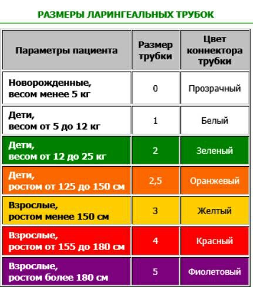

Применение трубки 3 поколения
Ларингеальные трубки 3-го поколения (суправокальные воздуховоды) — современные надгортанные воздуховодные устройства для управления дыхательными путями.

Особенности трубок 3-го поколения
- Наличие дренажного просвета для аспирации желудочного содержимого
- Два манжета: глоточный и пищеводный — обеспечивают надёжную изоляцию
- Снижение риска аспирации по сравнению с предыдущими поколениями
- Возможность введения желудочного зонда через дренажный канал
Показания
- Трудная интубация трахеи
- СЛР (реанимационные мероприятия)
- Пациент с риском аспирации при невозможности интубации
Размеры
- Размер 3 — рост 130–150 см, вес 30–60 кг
- Размер 4 — рост 150–180 см, вес 50–90 кг
- Размер 5 — рост >180 см, вес >90 кг
💡 Подробная видеоинструкция по применению доступна в Telegram-канале СМП Шпаргалки (пост #425)
Алгоритм установки
- Проверить оснащение, выбрать размер трубки
- Смазать трубку гелем
- Ввести трубку по средней линии до метки
- Раздуть манжеты согласно цветовой маркировке
- Убедиться в правильности положения (аускультация, капнография)
- Зафиксировать трубку
- При необходимости — провести желудочный зонд через дренажный канал